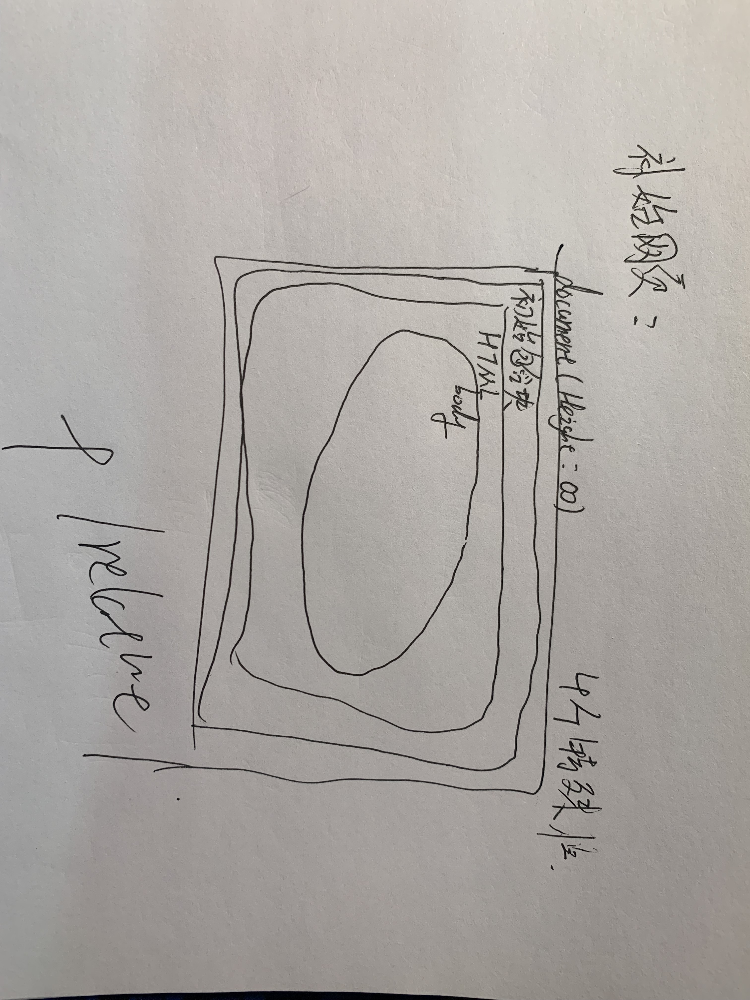

position为absolute的元素会相对于距离最近的position为relative/fixed/absolute的上级元素进行定位，如果上级元素都没有position属性，那么则相对于初始包含块定位。
初始包含块不是body元素也不是html元素，而是html元素的包含块（the initial containing block），指的是以整个 canvas (渲染内容的空间) 的坐标原点(左上)为基准，以 viewport (也就是浏览器视窗内渲染 HTML 的空间)为大小的矩形。
初始包含块:大小为视口,固定在最顶端的包含块
